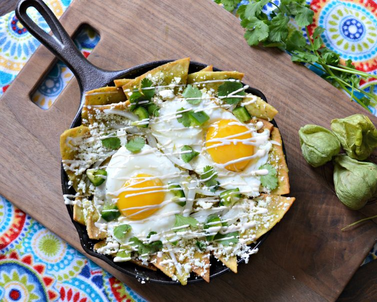

¿Que son los "Chilaquiles"?
Los chilaquiles son un plato típico mexicano elaborado a base de tortillas cortadas, fritas o tostadas (o al natural), que se cocinan en una salsa picante que es roja o verde dependiendo del tipo de chile usado y tiene multitud de variantes regionales pudiendo contener otros ingredientes como carne de pollo o de res deshilachado, arrachera, carne enchilada, cecina, chorizo, huevos al gusto, quesillo, queso manchego, queso fresco, crema, cebolla, aguacate... entre muchos otros. Se suele aromatizar con cilantro o epazote y se suelen acompañar con guarnición de frijoles.
Ingredientes para los "Chilaquiles":
- 4 Piezas Chile de árbol seco limpios y sin semillas.
- 2 Tazas Agua.
- 4 Cucharadas Aceite de maíz.
- 1 Bolsa Totopos (500 g).
- 1 Lata Media Crema.
- 200 Gramos Queso Panela rallado.
- 1 Cubo Concentrado de Tomate con Pollo.
- 1/4 Pieza Cebolla.
- 3 Piezas Jitomate.

Preparacion:
- Para la salsa, licúa los chiles de árbol con la cebolla, jitomate, el agua y el Concentrado de Tomate con Pollo.
- En una sartén calienta el aceite y fríe la salsa por 5 minutos o hasta que espese un poco, agrega los totopos a la salsa y mezcla bien..
- Sirve en un plato, decora con Media Crema y el queso panela.
Caja de comentarios